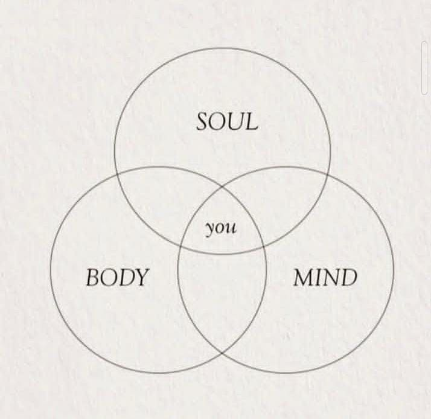

Corpo, Mente e EspÃrito: A TrÃade da Existência e o Poder do Alinhamento
Se você sentiu o eco do esgotamento em sua vida e decidiu mudar o jogo, o próximo passo é desvendar um segredo ancestral, a chave para uma vida de propósito e plenitude: a mágica acontece quando o Corpo, a Mente e o EspÃrito estão em total alinhamento.
Em um mundo acelerado e fragmentado, é fácil viver no modo "piloto automático". A mente se perde em preocupações futuras, o corpo se curva sob o peso do estresse e o espÃrito, nossa essência, fica em silêncio. Mas, e se eu te dissesse que existe uma forma de lutar pela sua integralidade, de reconectar esses três pilares e, finalmente, viver a sua mais alta frequência?
A Importância do Alinhamento Interior: O Que Significa a TrÃade?
A imagem que você viu é a representação perfeita. Você, sua essência, está no centro da intersecção desses três mundos:
- O Corpo: A sua casa. O veÃculo que te permite interagir com o mundo fÃsico. Ele armazena nossas emoções, memórias e tensões. Um corpo bem cuidado, nutrido e em movimento, é a base para o bem-estar.
- A Mente: O seu software. O campo de pensamentos, crenças e emoções que moldam sua realidade. Uma mente clara e consciente é a bússola que te guia.
- O EspÃrito (Soul): O seu GPS interno. A sua essência, intuição, valores e o propósito mais profundo. É a energia que te conecta ao todo e dá significado à sua jornada.
Quando esses três elementos operam em sintonia, você alcança um estado de saúde integral e consciência plena. É nesse ponto que a "magia" da vida se revela.
Mindfulness: A Chave para a Consciência no Aqui e Agora
Em um mundo de distrações constantes, a prática do mindfulness, ou "atenção plena", se tornou uma das ferramentas mais poderosas e pesquisadas para alcançar esse alinhamento. Não se trata de esvaziar a mente, mas sim de observá-la, sem julgamentos, no momento presente. A ciência comprova seus benefÃcios:
- Redução do Estresse: O mindfulness ativa o sistema nervoso parassimpático, responsável pelo "descanso e digestão", acalmando o corpo e a mente.
- Aumento da Concentração: Treinar a mente para focar no presente melhora a capacidade de concentração e a produtividade.
- Autoconsciência Aprimorada: Ao observar seus pensamentos e emoções, você se torna mais consciente de seus padrões, permitindo escolhas mais alinhadas com sua essência.
- Melhora da Saúde FÃsica: Pesquisas ligam a prática do mindfulness à melhora da pressão arterial, do sono e até do sistema imunológico.
Comece com 5 minutos por dia. Apenas sente-se em silêncio e observe sua respiração. É o primeiro passo para trazer sua mente de volta para casa.
A Postura Consciente: O Corpo Fala por Si Só
Sua linguagem corporal é a manifestação fÃsica do seu estado interior. Uma postura curvada e ombros fechados podem refletir medo, cansaço ou desânimo. Uma postura ereta, com o peito aberto, transmite confiança e presença. A postura consciente não é apenas sobre estética; é um ato de autocuidado e de alinhamento.
Quando você alinha sua coluna, você não está apenas corrigindo um desvio fÃsico. Você está enviando uma mensagem poderosa ao seu cérebro: "Estou presente. Estou forte. Estou pronto." Essa pequena mudança pode impactar seu humor, sua energia e até mesmo como outras pessoas te percebem. Lutar por essa postura é lutar pelo seu alinhamento interior.
O Caminho Diário para a Consciência e o Alinhamento
O alinhamento da trÃade não é um destino, mas uma prática contÃnua. Em um mundo que insiste em nos desconectar, precisamos lutar pela nossa integralidade diariamente. Aqui estão algumas dicas práticas para começar:
- 1. Respire e Movimente-se: Dedique tempo para atividades que unem corpo e mente, como yoga, tai chi, ou até mesmo uma caminhada consciente. Sinta seu corpo e sua respiração.
- 2. Medite e Reflita: Reserve 10 minutos para meditar, escrever em um diário ou simplesmente refletir sobre suas ações e pensamentos. Qual é a sua intenção para o dia? Suas ações estão alinhadas com seus valores?
- 3. Nutra sua Essência: O que alimenta a sua alma? Pode ser a leitura de um bom livro, ouvir música, passar tempo na natureza, orar ou passar tempo de qualidade com quem você ama.
- 4. Seja a Consciência: Antes de falar ou agir, pergunte-se: "Isso está alinhado com quem eu sou? É uma ação consciente?" A consciência é o seu superpoder.
A Sua Luta pela Consciência é a Mudança do Mundo
Ao se alinhar, você não apenas melhora a sua própria vida. Você se torna um farol para os outros. Uma pessoa consciente, centrada e alinhada inspira. Sua postura, suas palavras, sua presença... tudo fala por si só. É assim que a mudança acontece, de dentro para fora, irradiando para o coletivo. Continuar sua jornada de autoconsciência é a mais nobre luta que você pode travar. Lute por você. Lute pela sua integralidade. Lute pela sua magia.